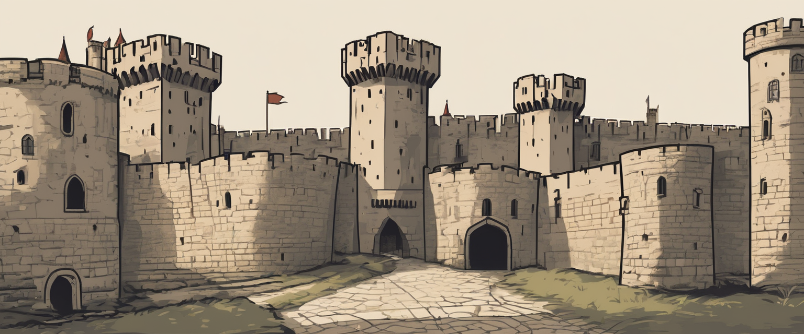
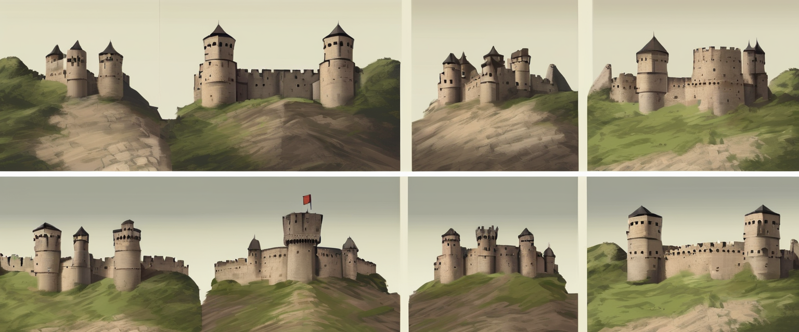
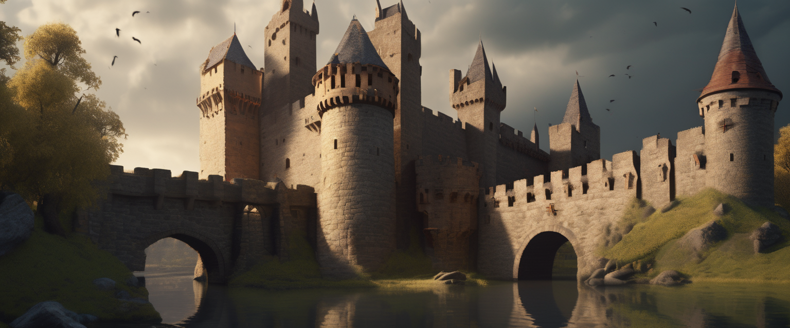
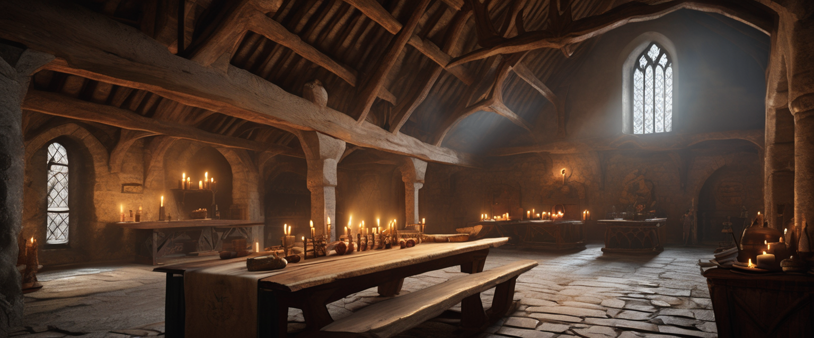
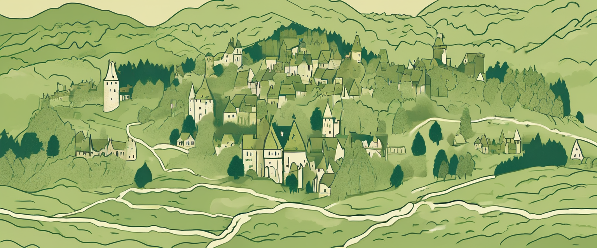

De middeleeuwse kastelen van België zijn stille getuigen van eeuwen van conflicten, machtswissels en alledaags leven achter dikke muren. Tussen de heuvels van de Ardennen, langs de Maas en midden in historische steden duiken burchten op die ooit het landschap domineerden. In dit artikel ontdek je hoe middeleeuwse kastelen zijn ontstaan, hoe je donjons, burchten en citadellen van elkaar onderscheidt, en welke kastelen vandaag de moeite zijn voor een daguitstap of een volledige kastelenroute.
📑 Inhoud
Wat is een middeleeuws kasteel? Donjon, burcht en citadel uitgelegd
Wie voor het eerst een kasteel bezoekt, wordt al snel geconfronteerd met termen als donjon, burcht en citadel. In de praktijk lopen die begrippen vaak door elkaar, maar historisch betekenen ze iets anders. Door de basis te kennen, kijk je met een veel scherper oog naar de kastelen die je bezoekt.
Donjon (hoofdtoren)
De donjon is de massieve woontoren in het hart van de burcht, gebouwd als laatste toevluchtsoord bij een aanval. Binnenin lagen verschillende vertrekken boven elkaar, vaak met een eigen waterput en opslagruimte, zodat de heer en zijn gezin zich langere tijd konden verschansen. De centrale toren van het Gravensteen in Gent en de indrukwekkende toren van Reinhardstein zijn klassieke voorbeelden van zo'n donjon.
Burcht / kasteel
Een burcht is het volledige versterkte complex: ringmuur, torens, poortgebouw, gracht én meestal een donjon. Zo'n kasteel diende tegelijk als militair steunpunt en als administratief centrum van een heerlijkheid. In Bouillon zie je hoe een rotsige ligging gecombineerd wordt met meerdere verdedigingslijnen, terwijl Beersel aantoont hoe een waterburcht eruitziet, met ronde torens in een omgrachting.
Citadel
Een citadel is geen geïsoleerd kasteel, maar de versterkte kern van een stad, vaak op een hoogte boven een rivier of een belangrijke handelsroute. De focus ligt er nog meer op pure verdediging dan op wonen. De citadel van Hoei en die van Namen zijn typische voorbeelden van deze stedelijke verdedigingswerken.

Links: donjon (losse woontoren) – Midden: burcht met ringmuur – Rechts: citadel als versterkte stadskern
In het dagelijks taalgebruik noemen we al deze sites "kastelen", maar strikt genomen gaat het dus vooral om burchten en citadellen. Een paleis, zoals je dat eerder in Frankrijk of langs de Loire ziet, is dan weer een onversterkte residentie die vooral voor comfort en representatie werd gebouwd.
De geschiedenis van de Belgische burchten
De middeleeuwse kastelen die je vandaag bezoekt, zijn het resultaat van een evolutie van eenvoudige houten verdedigingswerken naar complexe stenen burchten. Door de verschillende bouwfases te herkennen, zie je in één kasteel soms meerdere lagen geschiedenis tegelijk.

Van houten motte tot bastionvesting: vier eeuwen kasteelbouw
Van houten motte tot stenen kasteel
10e–11e eeuw: Mottekastelen
De eerste kastelen in onze streken waren houten torens op een kunstmatige heuvel (motte), omgeven door een gracht en een palissade. Ze konden snel worden opgeworpen om een gebied te controleren, maar waren kwetsbaar voor brand en zware belegeringsmachines.
11e–12e eeuw: Stenen donjons
Naarmate de macht en rijkdom van lokale heren toenam, werden houten constructies vervangen door steen. Donjons en ringmuren verrezen op strategische punten langs rivieren en handelsroutes. Vroege kernen van kastelen zoals Bouillon gaan terug tot deze periode.
13e–14e eeuw: Complexe burchten
In de hoge middeleeuwen werden kastelen uitgebreid met buitenmuren, hoektorens, geavanceerde poortgebouwen en soms meerdere verdedigingsringen. De openingen bleven klein en hoog, voorzien van schietgaten om aanvallers op afstand te houden. Het Gravensteen illustreert mooi hoe zo'n compacte, maar complexe burcht eruitziet.
15e–16e eeuw: Artillerie en het einde van de burcht
Met de opkomst van buskruit en kanonnen werden traditionele burchten steeds kwetsbaarder. Veel kastelen evolueerden naar comfortabele residenties met grotere ramen en tuinen, of maakten plaats voor moderne bastionvestingen met lage, dikke wallen.
Waarom waren kastelen zo moeilijk te veroveren?

Dikke muren, gracht en poortgebouw
Een middeleeuwse burcht was in de eerste plaats ontworpen om tijd te winnen. Dikke muren van soms twee tot vier meter weerstonden stormrammen en katapulten, terwijl diepe grachten en steile hellingen het moeilijk maakten om met belegeringsmachines dicht genoeg te komen.
De toegang zelf was vaak een kleine vesting binnen de vesting: poortgebouwen met valbruggen, valhekken en "moordgaten" waarlangs stenen of kokende vloeistoffen konden worden gegoten. Vanuit hoge torens en langs smalle schietgaten hadden boogschutters een uitstekend zicht op aanvallers, terwijl ze zelf relatief goed afgeschermd bleven.
Het dagelijks leven in een middeleeuws kasteel
Achter de stevige muren draaide het leven niet alleen om oorlog. Een kasteel was een klein universum op zich, waar bestuur, religie, onderhoud, ambacht en huishouden samenkwamen.

De grote zaal: hart van het kasteelleven
In de grote zaal – de ridderzaal – werd niet alleen gegeten, maar ook recht gesproken, onderhandeld en gefeest. De heer en zijn familie trokken zich terug in meer afgezonderde privévertrekken, vaak hoger in de donjon waar het veiliger en iets warmer was.
Een eigen kapel zorgde voor de dagelijkse mis en belangrijke plechtigheden, terwijl keukens, bakovens en opslagruimtes instonden voor de bevoorrading van soms honderden bewoners en bedienden. Op de binnenplaats vond je vaak een waterput, smidse en stallen: alles wat nodig was om het kasteel langere tijd autonoom te laten functioneren.
Kasteel Reinhardstein illustreert dit leven mooi: rondleidingen, wapencollecties en themadagen laten je letterlijk tussen de muren van een middeleeuwse burcht rondlopen.
Top middeleeuwse kastelen om te bezoeken
👨👩👧👦 Met kinderen
Deze middeleeuwse kastelen zijn ideaal voor een familiebezoek:
📍 Dicht bij Brussel
Op zoek naar een middeleeuws kasteel nabij Brussel dat open is voor het publiek?
🗺️ Kastelenroute in de Ardennen

Kastelenroute: Bouillon, La Roche, Reinhardstein en Vêves
Plan een 1- of 2-daagse route langs de mooiste middeleeuwse kastelen in de Ardennen:
Route 1: Maasvallei (1 dag)
- Château de Vêves – Sprookjeskasteel bij Dinant
- Ruïne van Poilvache – Spectaculaire ruïne met uitzicht op de Maas
- Kasteel van Freÿr – Renaissance-tuinen (optioneel)
Route 2: Hoge Venen & Ardennen (1-2 dagen)
- Kasteel Reinhardstein – Middeleeuwse burcht bij Ovifat
- Kasteel van Bouillon – Een van de oudste burchten van België
- Ruïne van La Roche – Romantische ruïne boven het stadje
📸 Mooiste ruïnes in Wallonië
Op zoek naar fotogenieke kasteelruïnes? Deze zijn het meest indrukwekkend:
Praktische info: tickets, openingstijden, rondleidingen
💡 Tip: Controleer altijd de officiële website voor actuele openingstijden en prijzen. Onderstaande info is indicatief.
| Kasteel | Type | Prijs (indicatief) | Rondleidingen |
|---|---|---|---|
| Gravensteen | Burcht | ±12 € (audioguide incl.) | Audioguide, groepen op aanvraag |
| Reinhardstein | Burcht | ±15 € (volw.), <6j gratis | Vaste rondleidingen FR/NL/DE |
| Bouillon | Burcht | ±10 € (volw.) | Roofvogelshows, fakkeltochten |
| Beersel | Waterburcht | Gratis | Vrij te bezoeken |
| Vêves | Burcht | ±9 € (volw.) | Rondleidingen, kinderactiviteiten |
Dagje op kastelenjacht: hoe plan je je bezoek?
1. Kies je regio
Concentreer je op één regio per dag: de Maasvallei, de Ardennen of Vlaanderen. Zo vermijd je te veel rijden.
2. Reserveer vooraf
Populaire kastelen zoals Gravensteen en Reinhardstein kunnen druk zijn. Reserveer tickets online om wachtrijen te vermijden.
3. Combineer met lunch
Plan een lunch in een nabijgelegen stadje: Dinant, Durbuy, Bouillon of La Roche bieden gezellige terrassen.
4. Reken 1,5-2 uur per kasteel
Een grondige verkenning met rondleiding duurt al snel anderhalf uur. Plan maximaal 2-3 kastelen per dag.
5. Check het weer
Ruïnes zijn spectaculair bij mooi weer, maar kunnen glad zijn bij regen. Neem stevige schoenen mee!
Veelgestelde vragen over middeleeuwse kastelen
Welke middeleeuwse kastelen kan ik bezoeken in België met kinderen?
De beste middeleeuwse kastelen voor families zijn Gravensteen (Gent), Kasteel Reinhardstein (Ovifat) met middeleeuwse activiteiten, Château de Vêves (bij Dinant) en Kasteel van Beersel (gratis, bij Brussel). Zie onze volledige lijst.
Wat is het verschil tussen een donjon, een burcht en een citadel?
Een donjon is de centrale woontoren van een kasteel. Een burcht is het volledige versterkte complex met muren, torens en gracht. Een citadel is een militaire versterking in of bij een stad. Zie ons glossarium voor details.
Wat is het oudste kasteel van België?
Het Kasteel van Bouillon wordt vaak genoemd als een van de oudste, met een kern die teruggaat tot de 8e-10e eeuw. Het Gravensteen in Gent dateert in zijn huidige vorm uit 1180.
Is er een kastelenroute in de Ardennen?
Ja! Je kunt een route plannen langs Bouillon, Reinhardstein, La Roche en Vêves. Zie onze voorgestelde routes voor een 1- of 2-daagse kastelentocht.
Hoeveel kosten tickets voor Kasteel Reinhardstein?
Indicatief: volwassenen ±15 €, kinderen/studenten/senioren ±13 €, kinderen onder 6 jaar gratis. Rondleidingen zijn inbegrepen. Consulteer altijd de officiële website voor actuele prijzen.
Wat is het verschil tussen een middeleeuws kasteel en een Loire-kasteel?
Middeleeuwse kastelen waren verdedigingswerken met dikke muren, smalle vensters en grachten. Loire-kastelen zijn renaissance-paleizen gebouwd voor comfort en representatie, met grote ramen, symmetrische gevels en tuinen. Zie ons artikel over architectuurstijlen.
Welke kasteelruïnes in Wallonië zijn het meest fotogeniek?
De mooiste ruïnes voor foto's zijn Poilvache (uitzicht op de Maas), La Roche-en-Ardenne (verlicht 's avonds), Montaigle en Logne. Zie onze lijst met fotogenieke ruïnes.